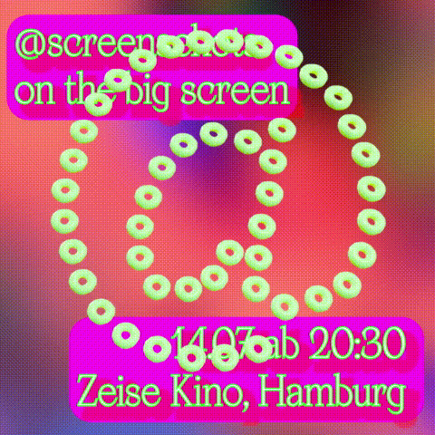

screenschots linktree
screenschots linktree
Kunst, Schwerpunkt digitale Medien
Prof. Aram Bartholl, HAW Hamburg, Department: Design, Kontakt: vorlesungsverzeichnis.design.haw-hamburg.de
Static
Screening
-
14.07. um 20:30 Zeisekino Hamburg. Kinovorührung ausgewählter Clips und Videoarbeiten von
Studierenden der letzten drei Semester @screenschots
: Videocollagen, 3D-Experimente und Anti-Social Media! Ergebnisse aus den Kunstkursen von Prof. Aram Bartholl, Kunst mit
digitalen Medien, Department Design, Fakultät DMI.

Mit Arbeiten von:
Elena Afli, Leonie Appold, Mascha Berger, Laura Böttcher, Jaqueline
Daunois, Stefano Dealessandri, Vivane Denis, Antonia Gilka, Fabian
Garna, Charlotte Golz, Jane Froh, Arved Hübner, Louisa Kohlhoff,
Jana Konrad, Vanessa Köwing, Franzisca Krapp, Martha Jokiel, Manuel
Jungblut, Maria Maaß, Anna Maro, Anika Menzel, Katharina Mumme,
Sarah Pfeiffer, Marieke Plettner, Kathrin Reichelt, Clemens Schöll,
Clemens Schöneboom, Vito Schöneberger, Rebecca Söhlke, Andrei Stroe,
Viviane Tchen, Alina Stegemann, Ole Wallötter, Hani Wibowo &
Giacomo Wiesenberg
Donnerstag 14.07. um 20:30 Uhr, länge 80 min (danach
Drinks im Foyer!)
Zeisekino, Friedensallee
7-9, 22765 Hamburg
Freier Eintritt!
Exhibitions
Semerster archive